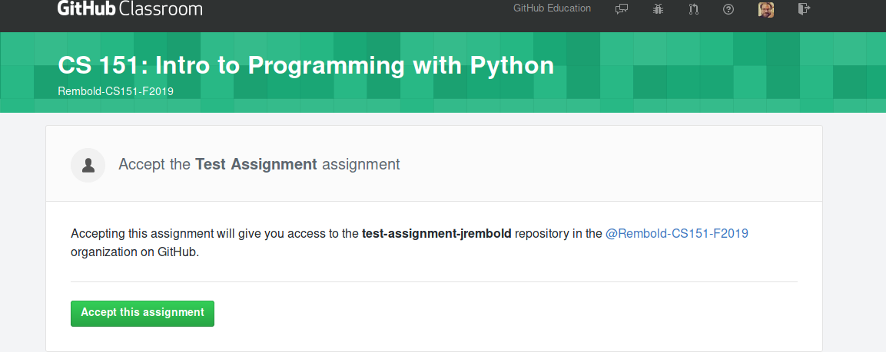
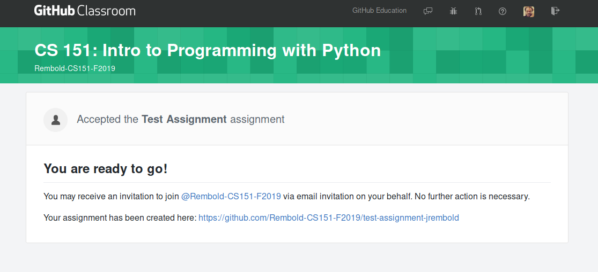
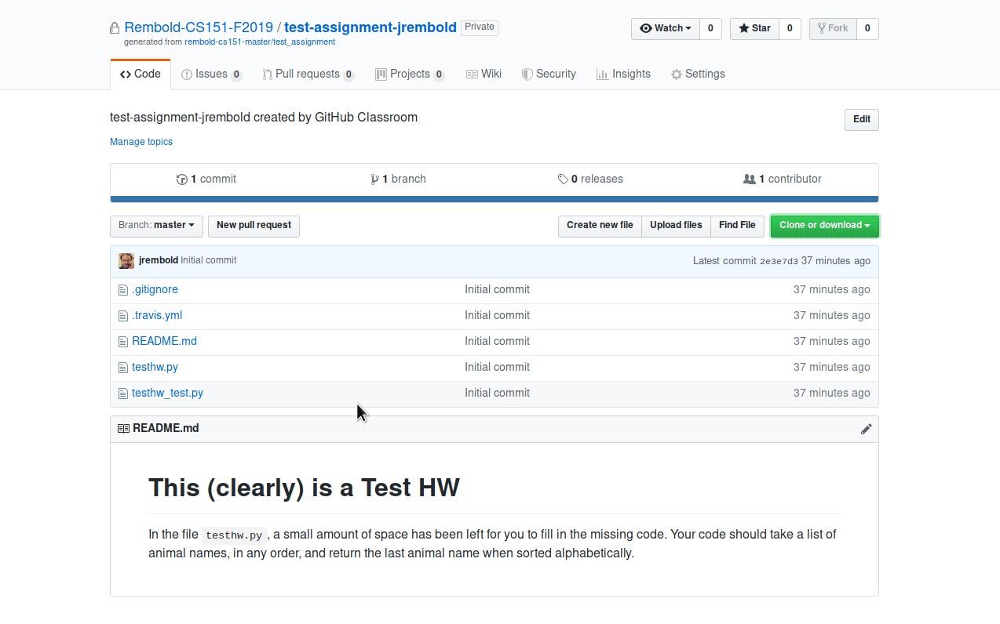
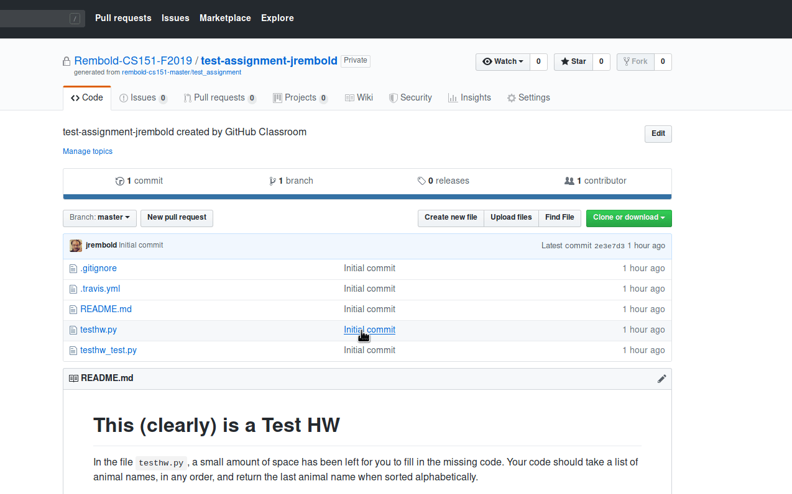

Getting setup on Github is pretty straightforward:
Github classroom has a central hub, located here, where you can see all the current assignments and their deadlines. In general though, this will probably not be a page you need to visit very often.
More frequently, what will happen is each week when homework or some lab is posted, there will be an accompanying url. Following that url will bring you to a page that looks something like this: 
When you accept an assignment, you will see a short loading screen as Github copies the necessary files and then you'll be faced with a screen like the one below. Here you can click the bottom link which will take you to your newly created (and private) repository where all your work will take place. .
In your repository you will see an exact replica of the folder structure and initial files I placed in that assignment. There will also always be a README which describes the requirements and guidelines for that assignment.
First you'll need to get the assignment onto your own computer, where you can edit the files. Click the green "Clone or dowload" button in your repository and then select "DOWNLOAD ZIP". Once it downloads you'll need to unzip it to whatever location you like (you can't just open files from inside it! Unzip it somewhere!) and can then proceed to edit the files. (Of course, if you are familiar with Git and want to use clone instead, by all means use that.) 
You are free to use whatever editor or IDE you like to write files in this class (Spyder may be the most obvious, but I'm going to encourage and recommend people toward using VSCode. Of course, if you are partial to Atom or PyCharm, you are more than welcome to use those). Once you have made some edits to the file, you will need to upload it back to your online repository. The simplest way to do this is with the "Upload Files" button to the left of "Clone or download". Doing so will bring up a new page where you should do several things:
And then hit Commit changes! The folder view on Github will update immediately, so you can select the file if you like to make sure it worked. You'll also see the number of commits increase in the upper left. 
Note 1: In general you'll be editing existing files more often that uploading your own file from scratch. Uploading a file that exists already in your repository will just override the old existing file with your new version.
Note 2: I highly recommend to regularly upload the latest work you have, and to make meaningful commit messages when you do. The reason is two-fold: